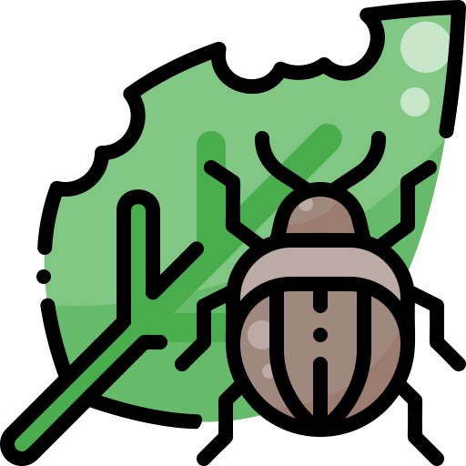

Identificar pragas
Devido a grande quantidade de pragas a identificação torna-se um trabalho árduo
Quantidade de cultivos
A quantia de cultivos torna inviável o mapeamento humano das pragas sem que haja perdas significativas

Tempo de reação
As pragas podem atacar a qualquer momento e nem sempre você estará preparado
